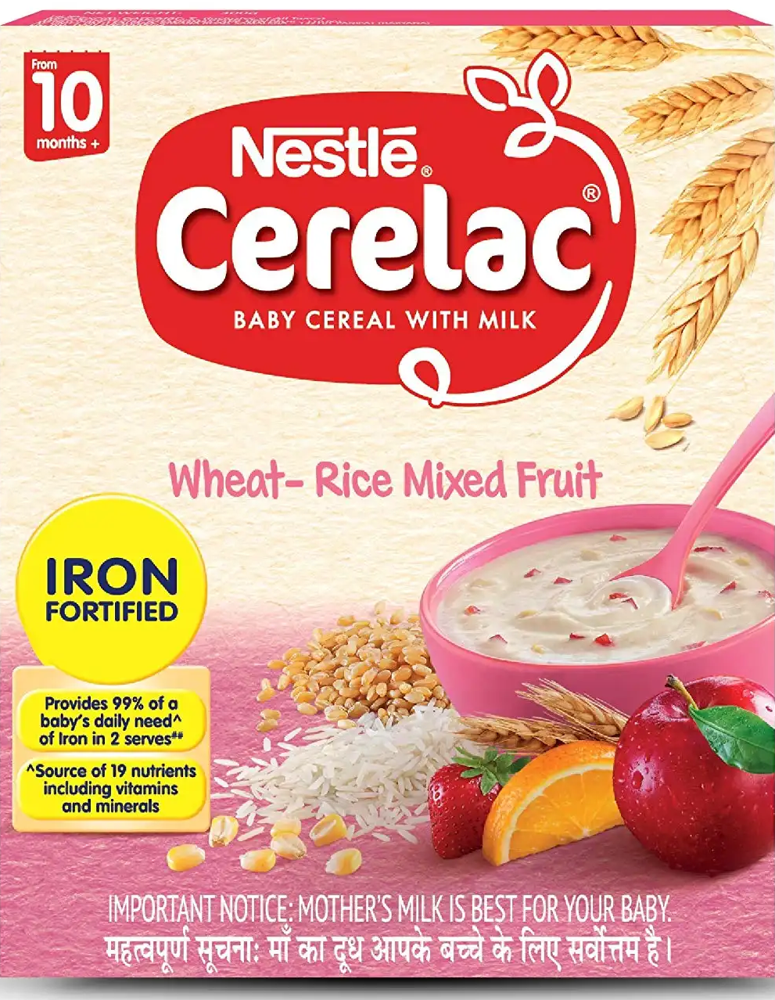
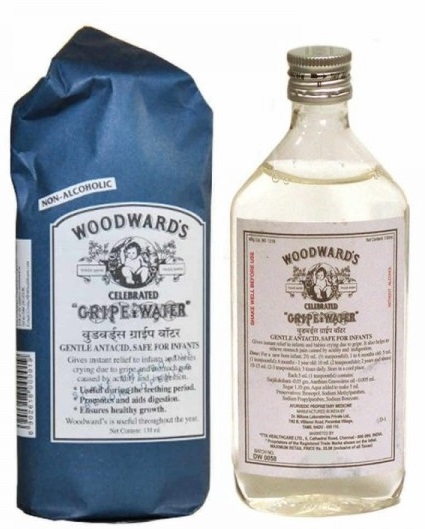
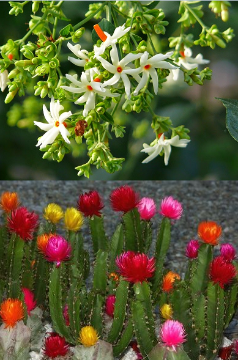
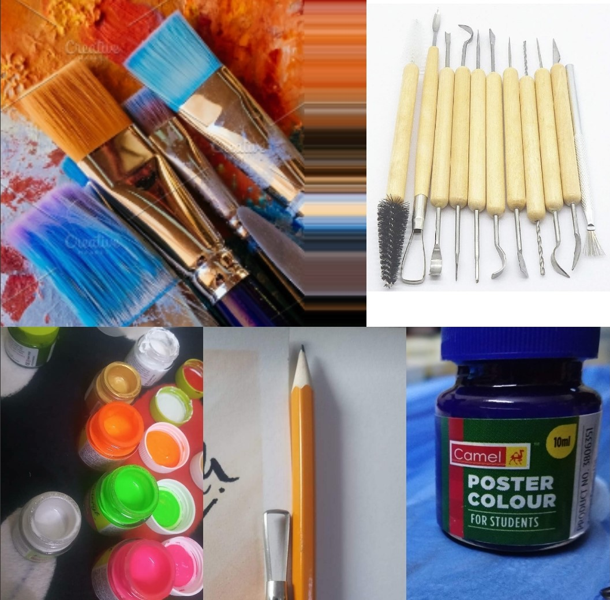
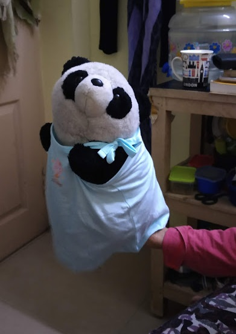
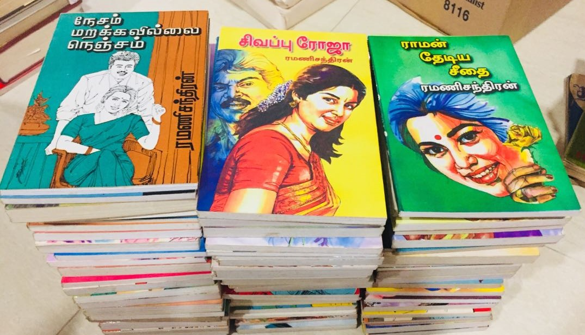
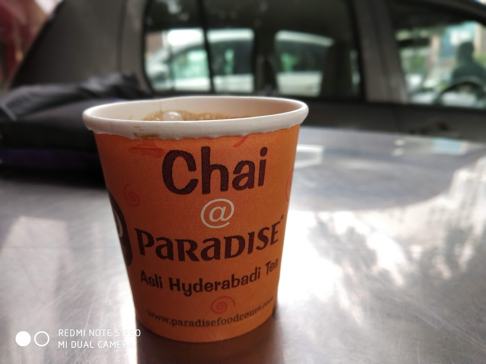

You know me very well since your childhood, in a way by being a kid at
heart you have won love and affection of many people in and around your
circle.. (might be aji gets lil bit of jealousy over here), so never let
your inner child go to coma stage. Let her be active with cerlac and
happiness.Wish u a Happiee birthday and healthier future...
Kuwaa.. Kuwaa.. Kozhandha alaradha.. Tears are good to wash away your
pain, It's ok to have melt down, cry it out then refocus on where you are
headed.. You are a woodwards papa, Remember this , sirikum papa woodwards
papa.. Happy birthday.. Keep Smiling..


Happy birthday chedi lady...!, we are grateful to you, you make us happy,
you are a charming gardener who makes our souls blossom. Wherever life
plants you , bloom with grace.
This is from your beloved tools, you are a creator of ideas, amazingly
talented and unique... keep using us and make things until your fingers
fall off, then grab your hot glue gun and reattach those & make more
things... craft so hard and sweat glitter... have the ideas(mess) lying
around everywhere , don't worry aji will clean the messy.. coming to the
point, Happiiee birthday craft lady, listen... life is like a canvas,
paint it with ur love, desire, craziness, do whatever makes u happy and
make that canvas colorful and magical..


Hey Anii...! Many more happiee returns of the day.. You are my perfect nanny, Being there for you is
the most nobel thing I can do, I love every minute that we are together,
it is important to be with a pet or a panda like me, so that you'll learn to be
okay if people didn't reciprocate their love.. I might know and can
understand some of your bad past, There is a saying, "Never say no to
panda", So you gotta go off that bad past stuff, because it doesn't matter, the
only thing that matters is what you choose to be now... So keep calm and
hug me... Hope your one day panda nanny wish comes true... Happy bear-th day..
We are your quietest and most constant friends, most accessible,
wisest counselors, and the most patient teachers.
Have a novel birthday...! May you enjoy a healthy fulfilling and entertaining new chapter..!
Keep reading us.. it is one of the best adventure that anyone can have, that's the thing
about us.. we let you travel without moving your feet..
DRINK TEA...
READ BOOKS... BE HAPPY...


Yayy Tea time... I know among these I am your most favorite one, Iam a hug in a mug. Wishing you a tea-rrific birthday...
Happpiiee happiee birthday to my bestt-tea...
Here is a dip(tip)... Life is like a cup of me, to be filled and enjoy with friends, Read more, Listen good music, Drink me, Ignore toxic people, Focus on yourself,
Try to travel more, Click moments, RepeaT. [As per your say... extreme of anything is not good.. FYI We are overloaded
with caffeine, drinking more causes sleeping disorders, Anemia and Iron deficiency...]